Building Eclipse plugins with Tycho
Martin Ellis
Aims
To automate builds of Eclipse plugins...
- Continuous Integration:
- early warning of build issues, e.g. bad commits, dependency changes
- always have latest build ready to install (e.g. from an update site)
- Testing:
- builds outside dev. environment
- reference environment: "works on my machine!"
- Reporting: Javadoc, Findbugs, etc.
- Target platform management
Choices, choices...
Existing tools
- Ant (via org.eclipse.ant.core.antRunner)
- Buckminster
- Maven 3 with Tycho plugin
Existing tools: Ant
Ant must be run in OSGI environment...
eclipse -nosplash -consoleLog \
-application org.eclipse.ant.core.antRunner \
-buildfile build.xml
<project name="P2 Mirror" default="mirror">
<property name="p2.root" value="${user.dir}/update"/>
<target name="mirror">
<p2.mirror source="http://m2eclipse.sonatype.org/sites/m2e/0.10.2.20100623-1649/"
destination="${p2.root}/m2e"/>
<p2.mirror source="http://m2eclipse.sonatype.org/sites/m2e-extras"
destination="${p2.root}/m2e-extras"/>
<p2.mirror source="http://repository.sonatype.org/content/repositories/forge-sites/m2eclipse-tycho/0.4.3/N/0.4.3.201010041831/"
destination="${p2.root}/tycho"/>
<p2.composite.repository>
<repository location="${p2.root}" name="M2Eclipse and extras"/>
<add>
<repository location="m2e"/>
<repository location="m2e-extras"/>
<repository location="tycho"/>
</add>
</p2.composite.repository>
</target>
</project>
Creating an Eclipse plugin: Project type
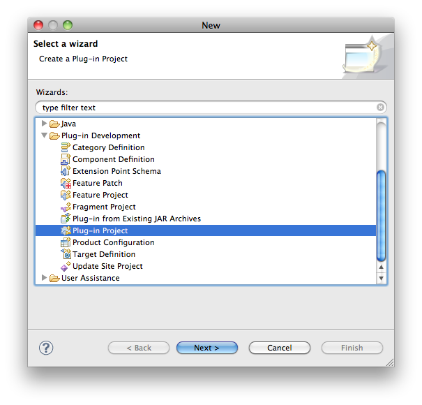
- File→New
- Other...
- Plug-in Project
Creating an Eclipse plugin: Name/Location
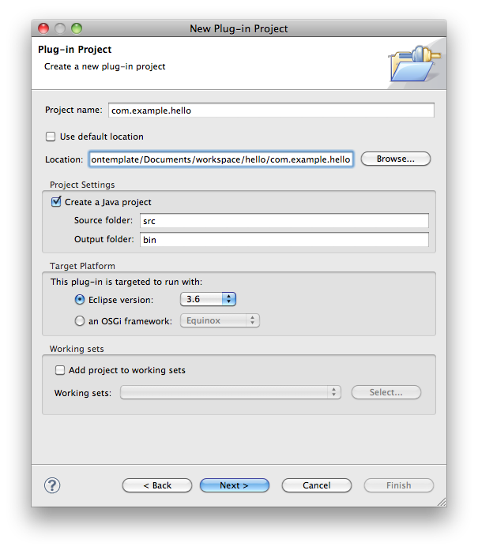
- Set project name
-
- Note: extra directory in project path
Creating an Eclipse plugin: Plugin details
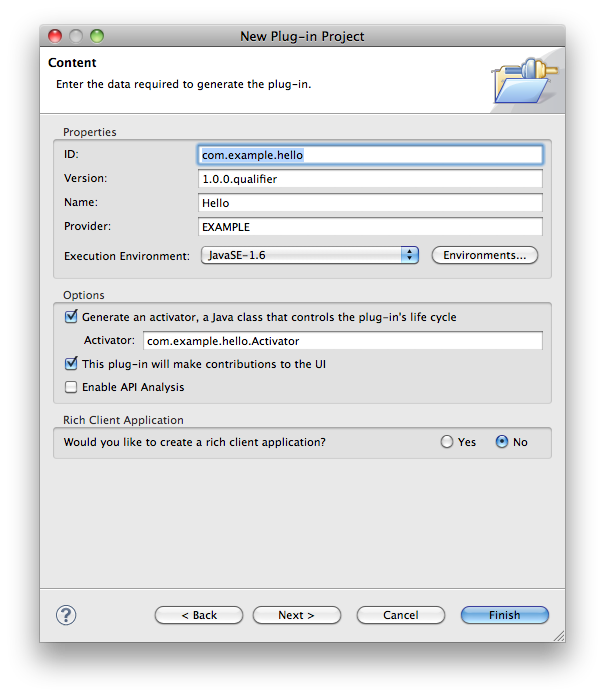
Creating an Eclipse plugin: Pick a template
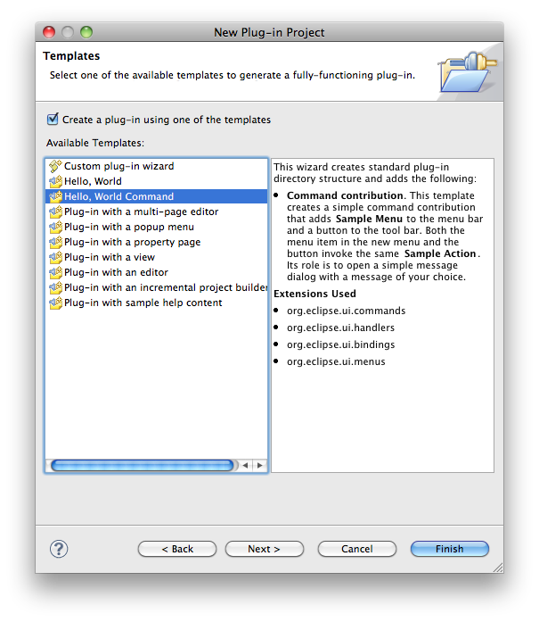
- Select a template
- Click Finish
Creating an Eclipse plugin: New Project
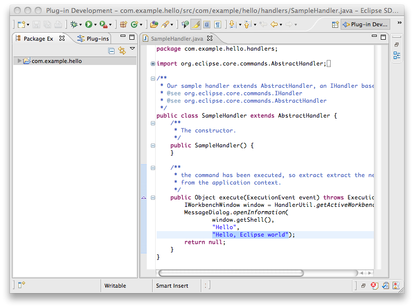
Creating an Eclipse plugin: Make it testable!
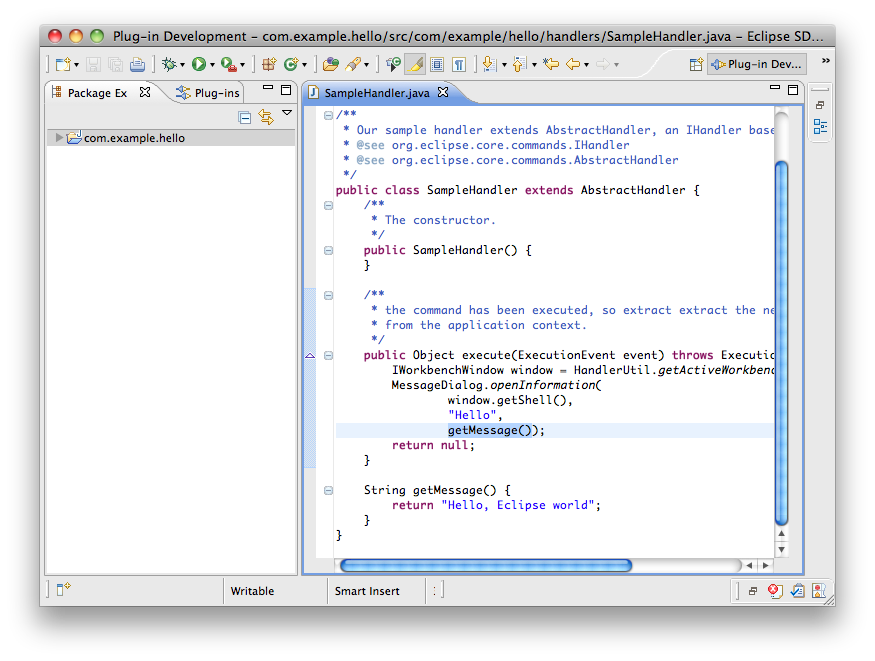
Creating a test bundle: Project type
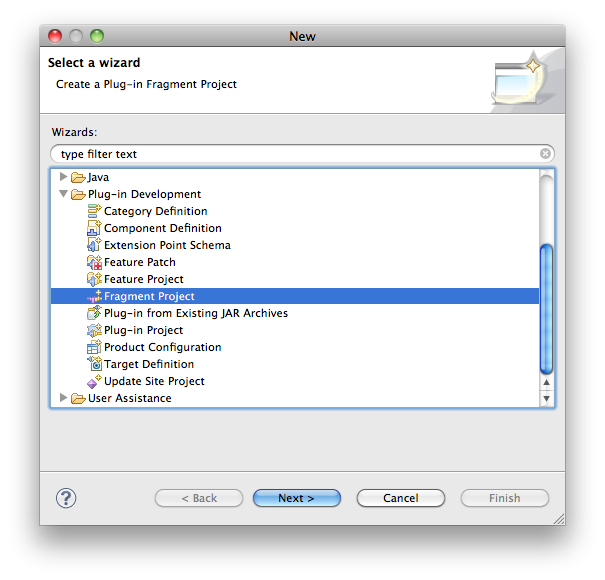
- File→New
- Other...
- Fragment Project
Creating a test bundle: Name/Location
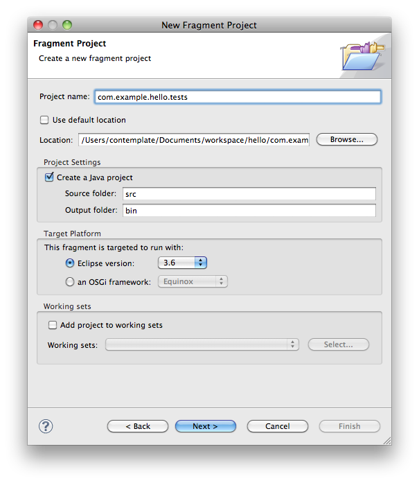
- Suffix: .tests
- Extra directory in path
Creating a test bundle: Plugin details
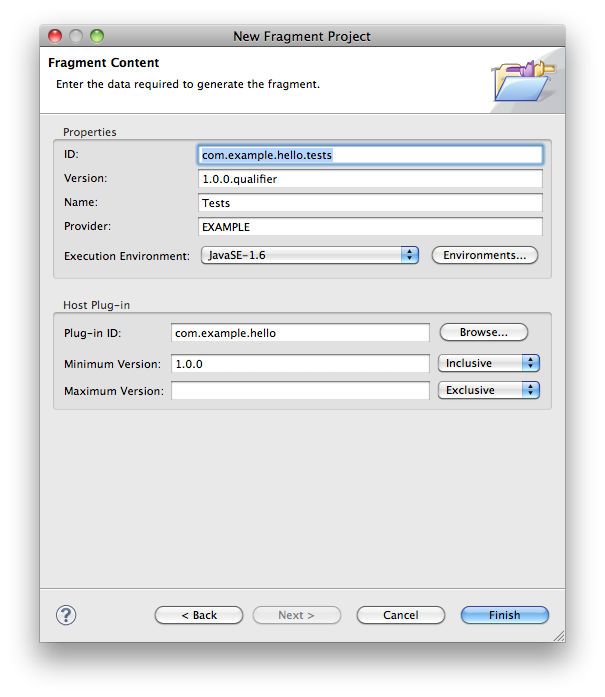
- Suffix: .tests (again)
- and ...
-
Creating a test bundle: Name/Location
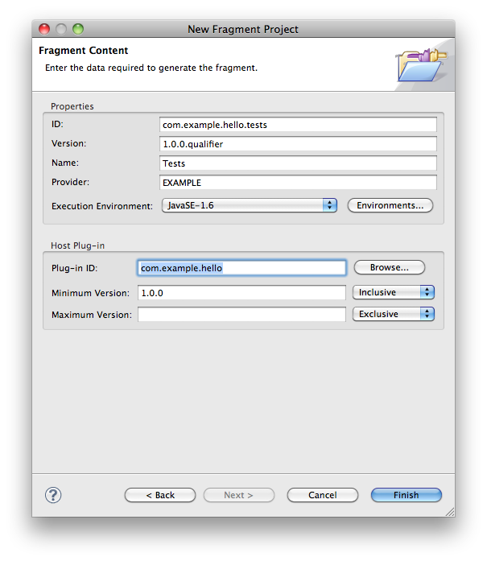
Creating a test bundle: MANIFEST.MF
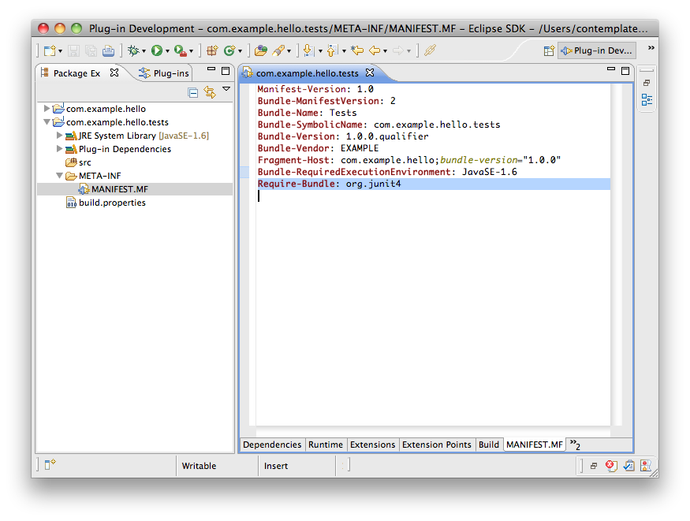
Creating a test bundle: Write tests
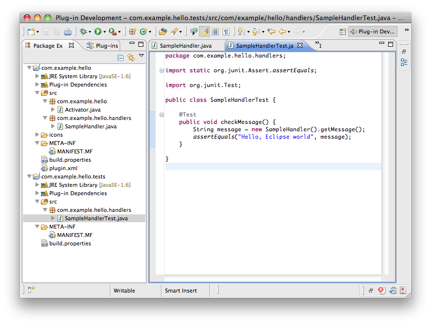
Creating a Feature Project: Project type
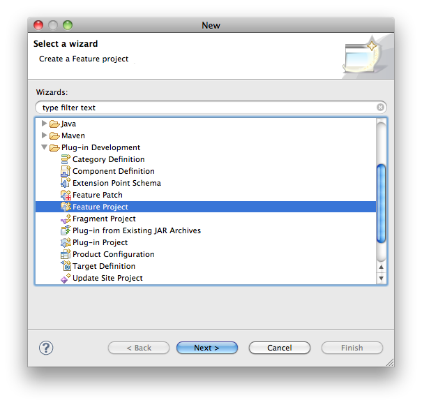
- File→New
- Other...
- Feature Project
Creating a Feature Project: Name/Location
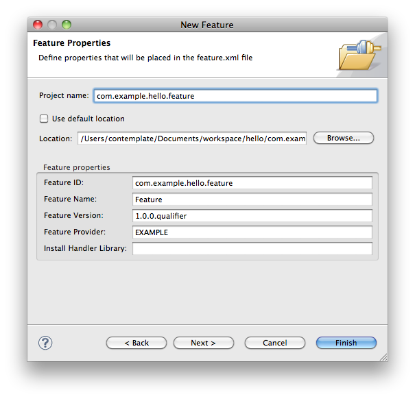
- Set project name
-
- Note: extra directory in project path
Creating a Feature Project: Select plugins
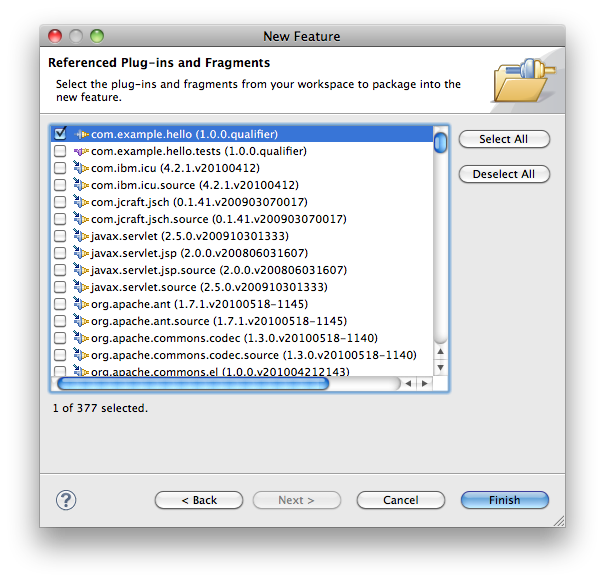
Creating a Feature Project: feature.xml
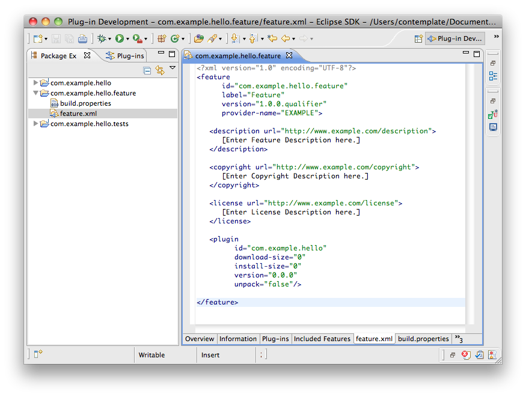
Creating an Update Site: Project type
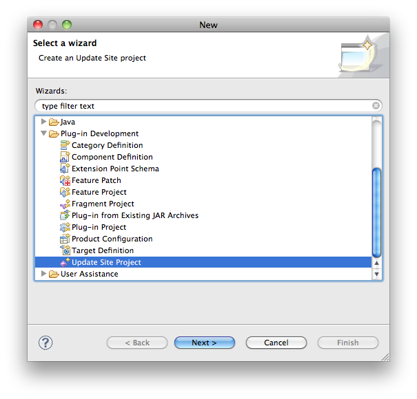
- File→New
- Other...
- Update Site Project
Creating an Update Site: Name/Location
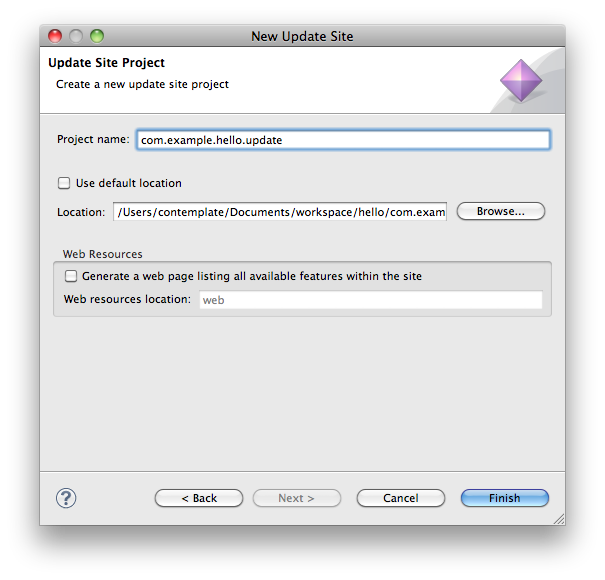
- Set project name
-
- Note: extra directory in project path
Creating an Update Site: site.xml
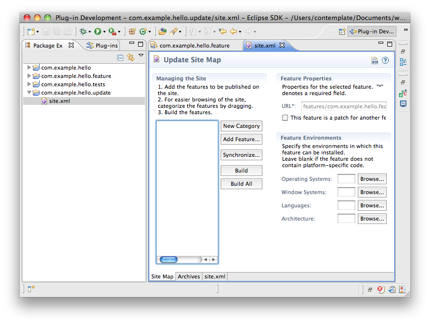
Creating an Update Site: “Add Feature”
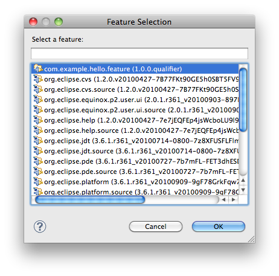
Creating an Update Site: site.xml
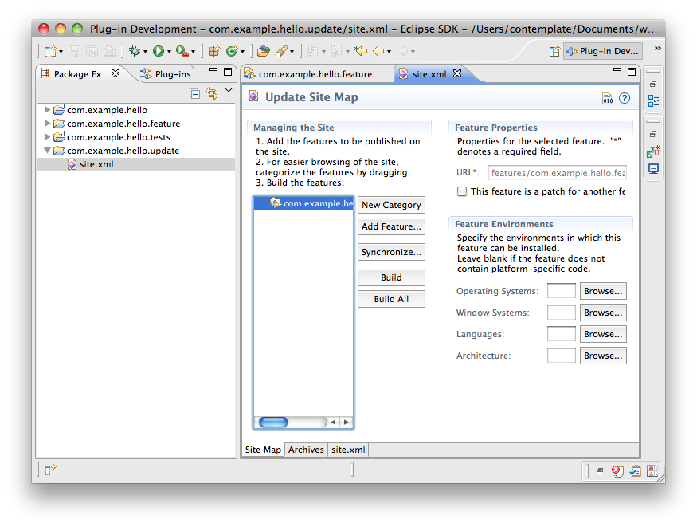
Tycho
Generate pom.xml files:
This step only needs to be done once:
mvn org.sonatype.tycho:maven-tycho-plugin:0.10.0:generate-poms \
-DgroupId=com.example.hello
Build
mvn install -Dtycho.targetPlatform=/opt/eclipse